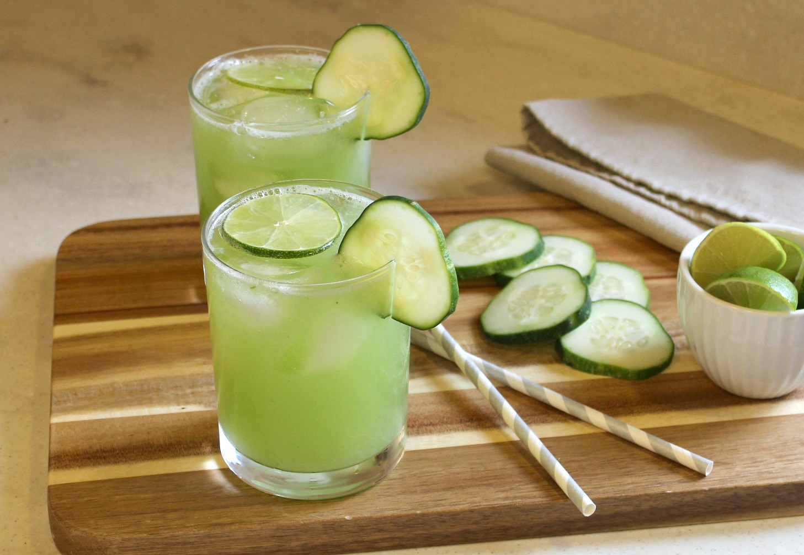
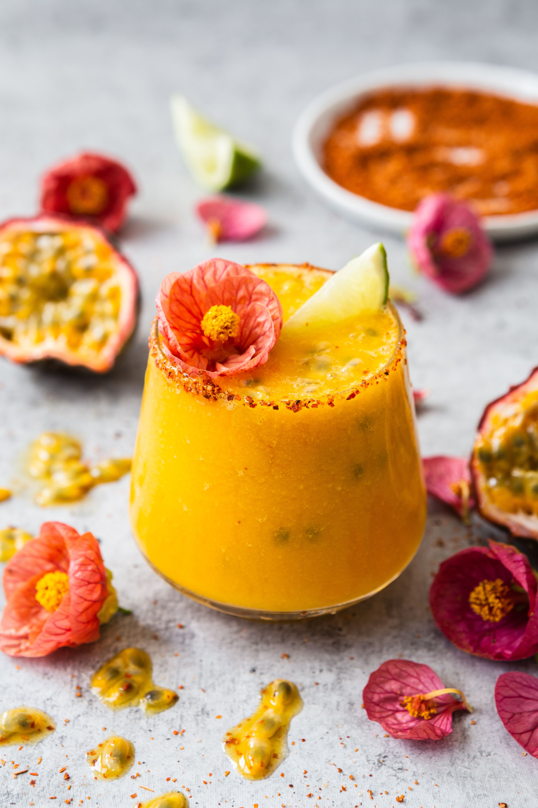

Bartender Home Page
Who am I?
Mixologist
How to make delicious cocteils ?
Here my favorite recipe for you;
Spiked Cucumber Margarita

2oz Grey Goose Vodka
2oz Cucumber Liquer
1oz simple syrup
1oz lime juice
Rosemary for garnish
Preparation
Muddle some rosemary leaf's into a cocktail glass
Pour 2oz of GGV into a shaker
Then pour the rest of the liquids in the shaker
Shake it about a min.
Pour the drink into rosemary garnished glass over ice.
ENJOY IT!
Passion Fruit Margarita

2oz Tequila
1oz lime juice
1oz triple sec
1oz passion fruit juice
1/2oz orange juice
Preparation
Muddle some rosemary leaf's into a cocktail glass
Pour 2oz of GGV into a shaker
Then pour the rest of the liquids in the shaker
Shake it about a min.
Pour the drink into rosemary garnished glass over ice.
ENJOY IT!